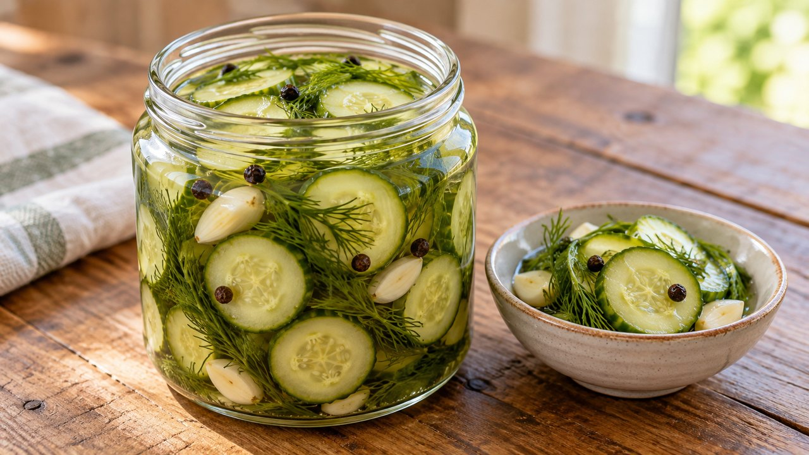

Refrigerator Dill Cucumber Pickles
American · Refrigerator pickling · About 30 min active prep; total estimate 24 hr 30 min including chilling. Follow the doneness endpoint rather than the clock.
Yield: About 2–3 pint containers; yield varies

Ingredients
- 1 lb firm pickling cucumbers, washed
- 1½ cups distilled white vinegar labeled 5% acidity
- 1½ cups water
- 1 tbsp canning or pickling salt
- 2 tsp sugar
- 4 sprigs fresh dill, rinsed
- 2 garlic cloves, peeled and halved
- 1 tsp black peppercorns
Directions
- Trim both ends of cucumbers, including the blossom end. Slice into ¼-inch rounds; large slicing cucumbers are softer and may need seeding.
- Divide cucumber slices, dill, garlic and peppercorns between clean heat-safe containers, leaving space for brine.
- Bring vinegar, water, salt and sugar to a boil, stirring to dissolve. Pour over cucumbers; use extra containers if needed to keep pieces covered without crowding. Do not dilute with plain water.
- Refrigerate promptly in small containers. Cover securely once chilled and allow 24 hours for flavor. Use clean utensils when serving.
Notes & serving ideas
Refrigerated only: no water-bath process is provided. Use within 3 days as a conservative household limit, not a source-validated shelf life. The reference describes general refrigerator-pickle preparation, not this exact batch.
Harvest reference batch: 1 lb pickling cucumbers. Only this primary crop is deducted; secondary ingredients and finished yields are not calculated.
Use in Harvest Helper I made this → Add to pantry
Review & safe storage
Original recipe: Family Recipes culinary preparation informed by the references below; the exact formula and storage life have not been laboratory validated or kitchen-tested here. References do not validate it for canning.
Keep at 40°F (4°C) or below. Use within 3 days as a conservative household limit, not a tested shelf life. This recipe is not shelf-stable; do not can it or leave it out to ferment.
Work with clean hands, sound produce and clean equipment. Refrigerate prepared perishables promptly, within 2 hours (1 hour above 90°F / 32°C); cool hot mixtures in shallow small containers. Never thaw perishables on the counter.